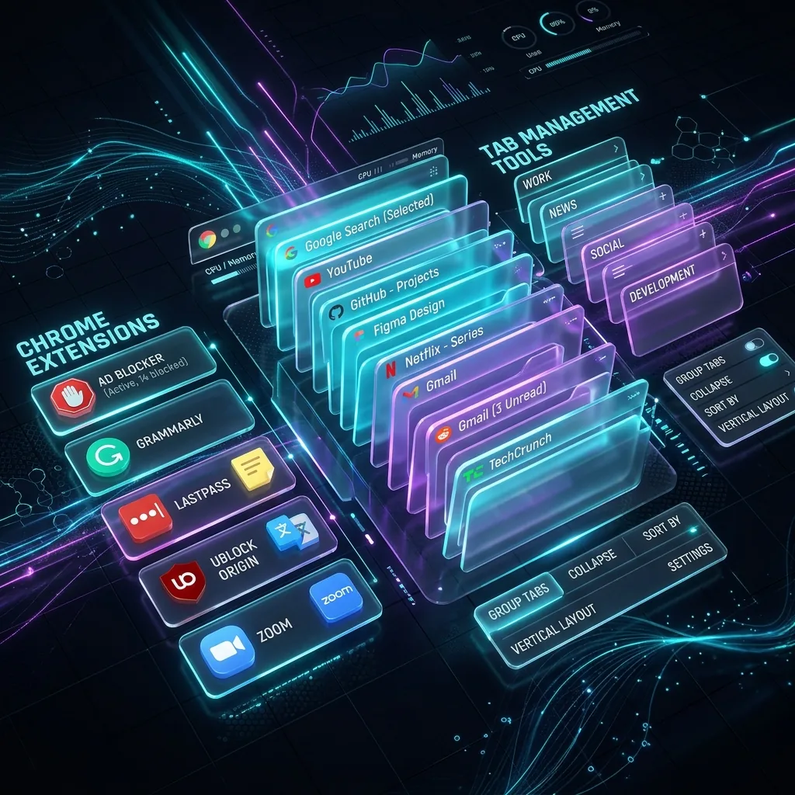

Session Buddy から乗り換えるときは、まず Session Buddy の書き出し（エクスポート）でバックアップを取り、それから保存したセッションを1つずつ開いて、LB TAB Layers のグループに入れていきます。LB TAB Layers には Session Buddy のデータを直接読み込む機能はありません。タブが多いときは、Chrome の「すべてのタブをブックマークに追加」で「LB TAB Layers」フォルダの中に保存すると、まとめてグループにできます。
Session Buddy は、開いているウィンドウとタブを「セッション」として保存し、あとで開き直せる拡張機能です。長く使われている定番の1つです。
この記事では、Session Buddy から LB TAB Layers へ移りたい人のために、データを失わずに移す手順と、使い始める前に知っておきたい考え方の違いをまとめます。
💡 先にお伝えすると、LB TAB Layers には Session Buddy のデータを直接読み込む機能はありません。この記事の手順は、保存したセッションのタブを一度開いて、LB TAB Layers のグループに入れ直す方法です。
1. 考え方の違い：「まるごと残す」と「分けて残す」
| Session Buddy | LB TAB Layers | |
|---|---|---|
| 残す単位 | ウィンドウのタブをまるごと（セッション） | 案件ごとのグループ |
| 保存するとき | そのときの状態を記録する | グループにタブを入れた時点で保存。あとから足したり減らしたりできる |
| 保存先 | 拡張機能の中 | Chrome のブックマーク |
| 拡張を消したとき | 中のデータも消える（書き出しておけば残せる） | ブックマークとして残る |
| 開く場所 | 拡張の画面 | サイドパネル（Alt+T） |
Session Buddy は、「今の状態を、そのまま記録しておく」のが得意です。LB TAB Layers は、「A社の仕事」「経理」のように案件ごとにタブを分けて、その単位で開いたり閉じたりするための道具です。
なので、乗り換えは「セッションを全部そのまま移す」より、「今も使うタブだけを、案件ごとに分けて移す」と考えるとうまくいきます。保存方法の違いは「セッション保存とブックマーク保存、どちらが安全か」でも詳しく書いています。
2. 最初に：Session Buddy でバックアップを取る
移す前に、Session Buddy の書き出し（エクスポート）で、保存したセッションをファイルに残しておきましょう。拡張の中のデータは、拡張を削除すると一緒に消えます。移し忘れがあっても、ファイルがあればあとから確かめられます。
書き出したファイルは、LB TAB Layers では読み込めません。あくまで「念のための控え」として、PCの分かる場所に置いておきます。
Session Buddy は、移し終わるまで消さないでください。しばらくは両方を入れたままで大丈夫です。
3. 移し方A：セッションを開いて、グループに入れる
セッションが少ない人や、移すタブを選びたい人に向いた方法です。
Session Buddy で、保存したセッションを開く
移したいセッションを、Session Buddy の画面から開きます。新しいウィンドウで開くと、ほかのタブと混ざりません。
そのウィンドウで Alt+T
開いたウィンドウで、Alt+T（Macは Option+T）を押して LB TAB Layers を開きます。LB TAB Layers の「単独タブ」には、今のウィンドウのタブが並びます。
「＋」でグループを作り、タブをドラッグ
「＋」で案件の名前のグループを作り、残したいタブを「単独タブ」からグループへドラッグします。この時点で、Chrome のブックマークとして保存されます。
残りのタブを閉じる
グループに入れなかったタブは、もう使わないものです。「単独タブ」のメニューの「表示中以外のタブを一括で閉じる」で片付けられます（→「単独タブの片付け」）。
1つのセッションに、いくつもの案件のタブが混ざっていることもあると思います。その場合は、グループを2つ3つ作って、タブを分けて入れてください。
4. 移し方B：Chrome の機能で、まとめてブックマークにする
タブがとても多く、まずは全部を移してから整理したい人向けの方法です。LB TAB Layers は、ブックマークの「LB TAB Layers」フォルダの中にあるフォルダを、グループとして読み込む仕組みになっています。これを使います。
セッションを新しいウィンドウで開く
移し方Aと同じく、Session Buddy から移したいセッションを開きます。
Ctrl+Shift+D で「すべてのタブをブックマークに追加」
そのウィンドウで Ctrl+Shift+D（Macは Command+Shift+D）を押します。Chrome のメニューの「ブックマークとリスト」→「すべてのタブをブックマークに追加」でも同じです。
保存先に「LB TAB Layers」フォルダを選ぶ
フォルダの名前を案件の名前にして、保存する場所に「LB TAB Layers」フォルダを選びます。LB TAB Layers を一度でも開いていれば、このフォルダはブックマークの中にできています。
LB TAB Layers を開き直す
LB TAB Layers を一度閉じて、もう一度開くと、作ったフォルダがグループとして並びます。
この方法は、ウィンドウのタブを全部まとめて保存します。移したあとに、いらないタブを消したり、別のグループへドラッグで分けたりしてください。無料版はグループ5つまでなので、セッションが多い人は、まず今の仕事に関係するものから移すのがおすすめです（インストールから3か月は、すべての機能を試せます）。
Chrome のブックマークの操作は、「ブックマークのエクスポート・インポート」でも説明しています。
5. 移したあとの使い方
Session Buddy では「保存したセッションを開く」でしたが、LB TAB Layers ではグループの ▶ で開いて、■ で閉じるが基本です。閉じても保存はそのままなので、案件を切り替えるたびに ■ と ▶ を押すだけです。
グループに入れたタブは、Chrome のブックマークなので、LB TAB Layers を消しても残ります。Chrome の再起動でタブが消えたときの心配も減ります（→「Chrome の再起動でタブが消えたときの対処法」）。
LB TAB Layers 自体のデータ（グループの色や並び、メモなど）を控えておきたいときは、設定の「エクスポート (JSON)」でファイルに書き出せます（→「JSONでバックアップ・移行する」）。
6. 併用するのもあり
「その日の終わりに、全部のウィンドウの状態を記録しておきたい」という使い方は、Session Buddy のほうが向いています。案件ごとに分けて開いたり閉じたりするのは LB TAB Layers、ウィンドウの記録は Session Buddy、と役割を分けて両方使うこともできます。
2つの比較は LB TAB Layers vs Session Buddy にもまとめています。
よくある質問
Q. Session Buddy のデータを、LB TAB Layers に読み込めますか？
直接は読み込めません。Session Buddy で保存したセッションを開き、そのタブを LB TAB Layers のグループに入れ直してください。タブが多いときは、Chrome の「すべてのタブをブックマークに追加」で「LB TAB Layers」フォルダの中に保存すると、まとめてグループにできます。
Q. Session Buddy は、いつ消せばいいですか？
移したいタブをすべてグループに入れ終わり、Session Buddy の書き出し（エクスポート）でバックアップを取ってからにしてください。拡張の中のデータは、拡張を削除すると一緒に消えます。
Q. 「すべてのタブをブックマークに追加」で保存したのに、グループに出てきません。
保存した場所が「LB TAB Layers」フォルダの中か確認してください。そのうえで、LB TAB Layers を一度閉じて開き直すと、グループとして読み込まれます。
Q. LB TAB Layers の「インポート (JSON)」で、Session Buddy のファイルは読めますか？
読めません。「インポート (JSON)」は、LB TAB Layers の「エクスポート (JSON)」で書き出したファイル専用です。読み込むと今のデータが上書きされるので注意してください。
▶ 実際の操作を動画で見る
サイドバーで、ブックマークとタブをいっしょに管理する様子です。